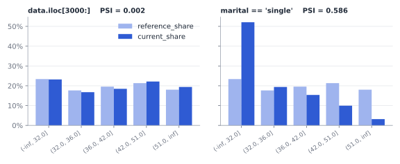

群体稳定性指标#
psi_table() 比较一个变量在两个样本中的分布，通常是开发样本和之后的监测样本。调用前，请用同一组边界或标签对两个样本分组。 csi_table() 衡量这种变化使评分卡分数移动了多少，参见 特征稳定性指标 。
模型投入使用后开始监控稳定性，所用样本按模型的 分箱方案 分组。随后 模型监控 逐期重复 PSI 和 模型表现 中的各项指标。
定义#
对第 \(i\) 组，令 \(q_i\) 为其在基准样本中的占比，\(p_i\) 为其在当前样本中的占比，则
每一项贡献都大于或等于零。PSI 描述的是分布变化，不使用目标标签。
计算示例#
缺失值单独成组，只在一个样本中出现的类别也会保留。它们的空单元格按 证据权重与信息值 中的方式平滑，因此每一项贡献都是有限值。
>>> import pandas as pd
>>> from kivi.stability import psi_table
>>> reference = pd.Series(["A", "A", None])
>>> current = pd.Series(["B", None, None])
>>> psi_table(reference, current).round(4)
reference current reference_share current_share psi
bin
A 2 0 0.5714 0.1429 0.5941
NaN 1 2 0.2857 0.5714 0.1980
B 0 1 0.1429 0.2857 0.0990
如果只有每组的计数（例如来自监控报表），可以用 psi() 按相同的分组顺序传入两个样本的计数，得到总的 PSI：
>>> from kivi.stability import psi
>>> round(psi([2, 1, 0], [0, 2, 1]), 4)
0.8912
稳定与偏移的样本#
来自同一客群的两个样本，PSI 接近于零。客群发生变化时，发生移动的箱会凸显出来。下面把当前样本换成只包含单身客户的样本，他们比基准样本年轻得多。
>>> from kivi.binning import bin_edges
>>> from kivi.datasets import Dataset
>>> data = Dataset.bank_data()
>>> sample = data.iloc[:3000]
>>> edges = bin_edges(sample["age"], bins=5)
>>> before = pd.cut(sample["age"], edges)
>>> single = data[data["marital"] == "single"]
>>> shifted = psi_table(before, pd.cut(single["age"], edges)).sort_index()
>>> shifted[["reference_share", "current_share", "psi"]].round(3)
reference_share current_share psi
bin
(-inf, 32.0] 0.234 0.521 0.230
(32.0, 36.0] 0.177 0.194 0.002
(36.0, 42.0] 0.196 0.154 0.010
(42.0, 51.0] 0.213 0.099 0.087
(51.0, inf] 0.180 0.032 0.258
>>> print(f"PSI = {shifted['psi'].sum():.3f}")
PSI = 0.586

左图：其余客户与基准样本基本一致。右图：单身客户集中在最年轻的箱，最年轻和最年长的两个箱贡献了大部分 PSI。#
解读结果#
列 |
含义 |
|---|---|
|
每组的实际观测数。 |
|
平滑后的 \(q_i\) 和 \(p_i\)；每列之和为 1。 |
|
该组的贡献。对该列求和得到整体漂移。 |
备注
一种常见的经验口径是：PSI 低于 0.1 视为变化较小，0.1 到 0.25 为中等变化，高于 0.25 为显著变化。这些阈值取决于箱数和平滑规则，从 0.2.x 迁移分析时请重新核对。
按期监控#
在生产环境中，每一期都要相对开发样本计算 PSI，并按上面的经验口径判断。银行数据只记录了最后一次联系的月份而没有年份，因此下面的月份混合了多个年份，请把它看作一份监控报告的示例。
>>> psi_by_month = pd.Series({
... month: psi_table(before, pd.cut(group["age"], edges))["psi"].sum()
... for month, group in data.groupby("month")
... })
>>> psi_by_month.sort_values(ascending=False).round(3).head(4)
dec 0.753
mar 0.226
oct 0.217
sep 0.179
dtype: float64
>>> data["month"].value_counts()[["dec", "mar", "oct", "sep"]].tolist()
[20, 49, 80, 52]
每个联系月份的 age 相对基准样本的 PSI，各月下方标注了客户数。#
越过阈值的月份恰好也是样本最少的月份。12 月只有 20 位客户，其 PSI 主要反映抽样噪声。在用高 PSI 触发预警之前，应先设定最小样本量。
对于生产环境中的模型， stability_table() 一次为每个变量计算这张表， monitoring_table() 则给出评分的 PSI 以及每期的结果和区分能力；见 模型监控 。
特征稳定性指标#
PSI 能说明分布发生了移动，却不能说明这种移动对分数有什么影响。特征稳定性指标（CSI）以每组的评分卡分值 \(s_i\) 为权重，衡量各组占比的变化：
CSI 是该变量平均分值从基准样本到当前样本的变化：CSI 为负，说明该变量现在平均给出的分值更少。对评分卡的所有变量，CSI 之和就是平均分数的变化。由于每个样本的占比之和都为 1，给每组的分值加上同一个数不会改变 CSI，因此起作用的只是各组之间的差别。
备注
有些文献把单个变量的 PSI 称为它的 CSI。kivi 采用特征分析报告中按分值加权的定义；要计算某个变量的 PSI，请像上文那样对其分组调用 psi_table() 。
示例使用 评分卡 中的评分卡。在开发样本上拟合四个变量的 WOE，并把模型转换为分值：
>>> import numpy as np
>>> from kivi.scorecard import points_table
>>> from kivi.stability import csi_table
>>> from kivi.woe import woe_table
>>> development, monitoring = data.iloc[:3000], data.iloc[3000:]
>>> age_edges = np.array([-np.inf, 25, 35, 45, 55, 65, np.inf])
>>> def to_groups(frame):
... groups = frame[["poutcome", "contact", "housing"]].copy()
... groups["age"] = pd.cut(frame["age"], age_edges)
... return groups
>>> dev_groups, mon_groups = to_groups(development), to_groups(monitoring)
>>> tables = {column: woe_table(dev_groups[column], development["target"]) for column in dev_groups}
>>> coefficients = {"poutcome": 0.899, "contact": 0.658, "housing": 0.691, "age": 0.714}
>>> scale = dict(pdo=20, base_score=600, base_odds=50)
>>> table = points_table(tables, coefficients, -2.028, **scale)
csi_table() 接受两个样本的分组以及该变量各分组的分值，这里取分值表中 age 的各行：
>>> age = csi_table(dev_groups["age"], mon_groups["age"], table.loc[["age"]])
>>> age[["reference_share", "current_share", "points", "csi"]].round(4)
reference_share current_share points csi
bin
(-inf, 25.0] 0.0267 0.0204 120.0498 -0.7546
(25.0, 35.0] 0.3460 0.3307 137.0775 -2.0968
(35.0, 45.0] 0.3067 0.3077 139.8369 0.1434
(45.0, 55.0] 0.2127 0.2288 136.4122 2.2004
(55.0, 65.0] 0.0917 0.0901 135.6178 -0.2162
(65.0, inf] 0.0163 0.0224 113.4475 0.6830
与 psi_table 不同，这里的占比不做平滑。贡献中没有对数，因此空组无需平滑也只有有限的贡献；而平滑后的占比会让空组拥有它并没有的客户，求和结果也就不再是平均分值的变化。
特征分析报告列出评分卡每个变量的这两个指标。CSI 列之和就是平均分数的变化，这里不到五分之一分：
>>> def stability_report(reference, current):
... return pd.DataFrame({
... column: {
... "psi": psi_table(reference[column], current[column])["psi"].sum(),
... "csi": csi_table(reference[column], current[column], table.loc[[column]])[
... "csi"
... ].sum(),
... }
... for column in coefficients
... }).T
>>> report = stability_report(dev_groups, mon_groups)
>>> report.round(4)
psi csi
poutcome 0.0031 -0.4595
contact 0.0082 0.3520
housing 0.0000 -0.0381
age 0.0055 -0.0408
>>> print(f"change of the average score: {report['csi'].sum():.2f} points")
change of the average score: -0.19 points
这两个指标回答的是不同的问题。上文偏移样本中的单身客户，年龄分布差别很大，但这些客户集中的年龄段与其他年龄段的分值相差无几，因此年龄只让其平均分数降低不到半分：
>>> stability_report(dev_groups, to_groups(single)).round(4)
psi csi
poutcome 0.0050 -0.6173
contact 0.0119 -0.9260
housing 0.0050 -0.4637
age 0.5311 -0.4126
没有分值的分组（例如开发样本中没有的类别）会引发错误，除非用 unseen_points 给出其客户得到的分值。这里要传入的是分值而不是 WOE：如果 woe_transform() 用 unseen=0.0 编码了该类别，就传入 WOE 为 0 时的分值，即对一行全零调用 woe_to_points() 的结果，每个变量都相同。
样本权重#
对于加权样本，请把 reference_weights 和 current_weights 传给 psi_table() ；此时计数为权重之和。 csi_table() 接受同样的两个参数，此时占比是各样本总权重中的占比。